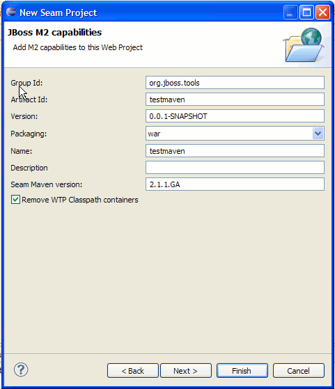

General |
|
| Integration with m2eclipse |
This release introduces an optional integration with m2eclipse to provide Maven support for projects created by JBoss Tools and to some extent core WTP projects too.  The first integration is to provide a Maven facet for WTP projects which for now just integrates with the Seam facet to let Maven get the libraries instead of using the Seam runtime. Here is a screencast showing it in action for Seam projects: Screencast showing Maven Note: shortly before M2 release, m2eclipse released a 0.9.9 on their update-dev updatesite which changed the API we dependent on. We have fixed that in M3/trunk build, so for M2 it is important to use m2eclipse stable updatesite or the latest integration build we developed M2 against. |
|
|
|